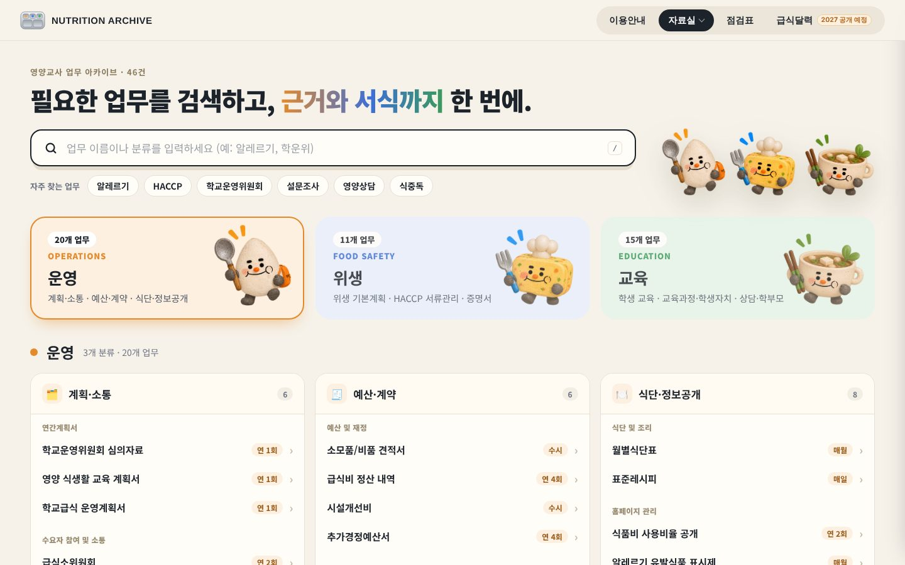
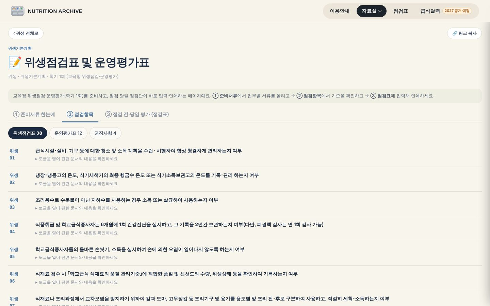
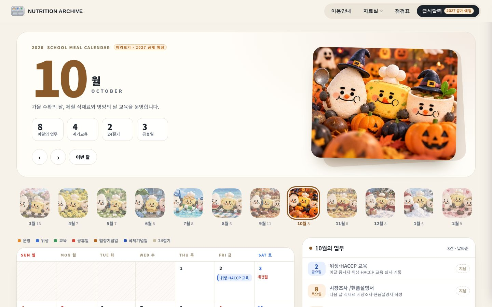
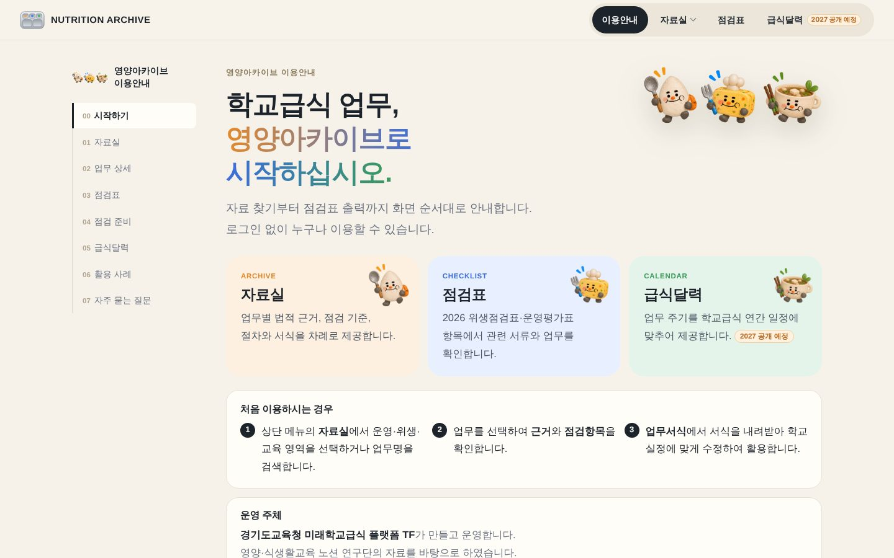
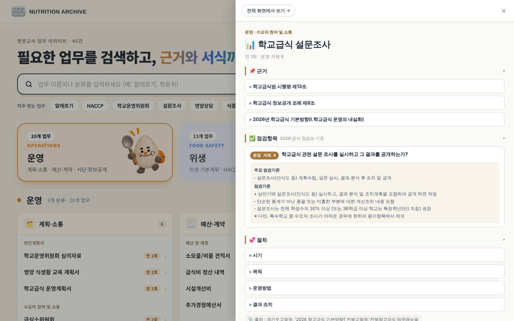
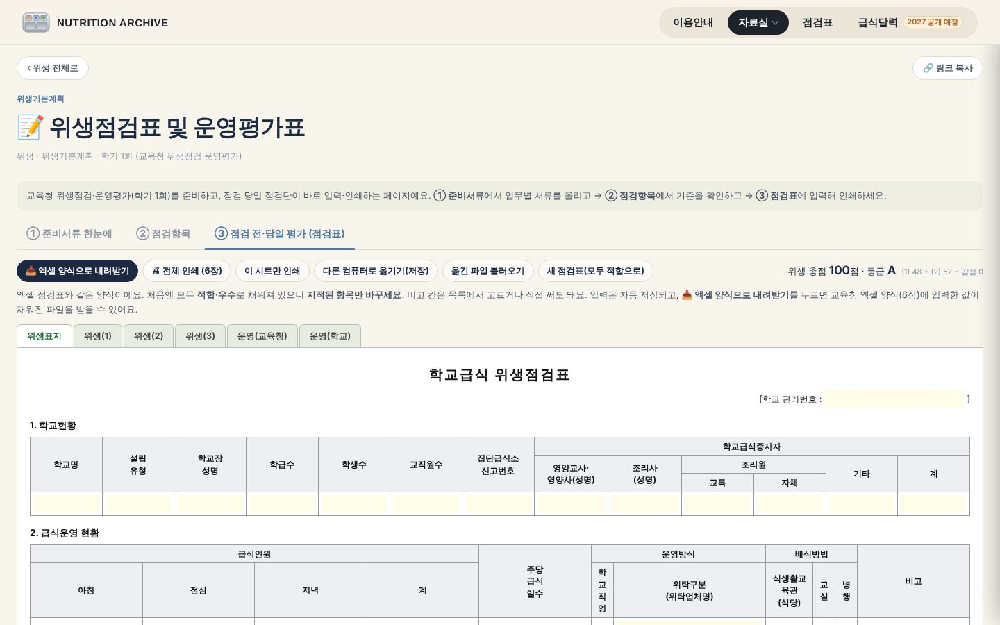
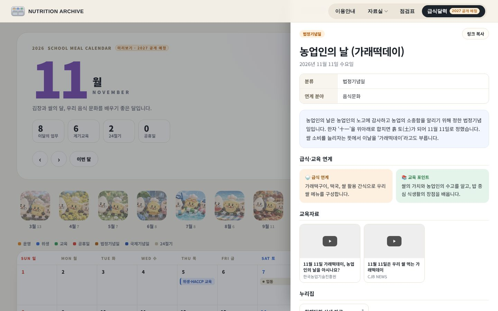

사이트를 불러오는 중…
사이트를 불러오지 못해 캡처 화면을 보여 드려요. 인터넷 연결(휴대폰 핫스팟)을 확인해 주세요.
경기도교육청 미래학교급식 플랫폼 TF
영양아카이브
흩어진 학교급식 공문·지침·서식을
업무별로 한곳에 정리한 자료실
2026. 10. 29. 도교육청 협의 · 팀장 김소리
WHY
이 서류, 근거가 뭐였더라?
작년 계획서는 어디 뒀지?
흩어진 공문과 지침 사이에서
매년 같은 자료를 다시 찾고 있었습니다.
필요한 것이 한 화면에 차례로 나옵니다.
OVERVIEW




운영·위생·교육 업무
2026 위생점검표
운영평가표 (법령 5·자체 7)
업무가 표시되는 급식달력
ARCHIVE
운영·위생·교육 세 갈래로 나누고, 업무마다 같은 순서로 정리했습니다.

CHECKLIST
교육청 위생점검·운영평가(학기 1회)를 한 페이지에서 준비합니다.

CALENDAR
달마다 해야 할 업무와, 급식과 연계할 수 있는 계기교육을 함께 보여 줍니다.

NEXT
휴대폰 카메라로 QR을 비추면 바로 들어가 보실 수 있습니다.thfl4811-maker.github.io/nutrition-archive
사이트를 불러오지 못해 캡처 화면을 보여 드려요. 인터넷 연결(휴대폰 핫스팟)을 확인해 주세요.